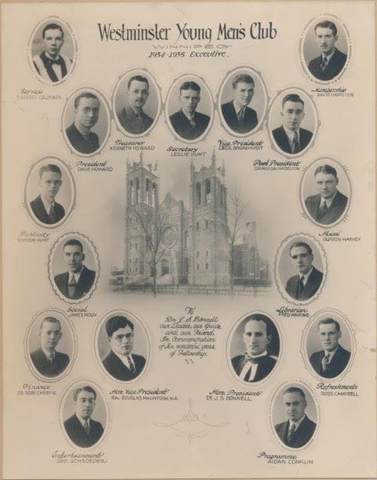

-1-MasterItem.svg)
Stories of Westminster United Church & its People / Page
144
Leslie goes on to recount the Club’s activities: to the little settlement of Cormorant, on the
Hudson Bay Railway went a bundle of Christmas cheer, gladdening the hearts of 22
children.
From the perspective of the 21st Century we picture a group of children spread
out
on the floor stone drunk from all that “Christmas cheer.”
During the 4th season from the public platform over 50 addresses (speeeches)
were given to outside
organizations and a program of service was launched to country churches. The
club also held an
‘undenominational’ mass meeting in April to 4000 people.
In 1933 the club, with the help of the YMCA organized “two memorable mass meetings,
the principal speaker being Dr. Sherwood Eddy. (This event is mentioned in the
article on Dr.
Bonnell.) Leslie indicates that over 6000 people attended. Here, the writer has
to recognize that
Leslie Hunt was strong on hyperbole but short on simple honest mathematics. In
two meetings
he would have us believe that over 6000 people (seated in Westminster's
sanctuary and in the
Tivoli Theatre across the Street) attended this momentous event. I don't believe
it.
Too many people and not enough space!
In the event the club thrived till well into the 40s
when WWII called away young men for service overseas.
This picture of the Club’s 1934 executive includes a number of names
of people who became prominent in Winnipeg in later years. Two
names that immediately spring to mind are Gurzon Harvey who served
on Winnipeg’s City Council for 26 years. The other is Aiden Conklin,
35 years as School Trustee in St. James, Reeve of the Municipality of
Victoria Beach, recipient of the Queen Elizabeth II Silver Jubilee Medal
for Community service in 1977 and an inductee into The Manitoba
Order of The Buffalo Hunt in 1980. Aiden’s daughter Liz Wijtkamp
is presently an active member of Westminster Church.
Table
of Contents
